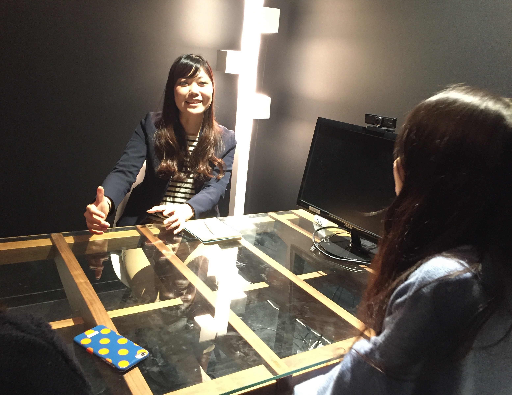

ー土井さんは、本当にハッピーオーラがすごくでていて、
以前からインターン生一同いつかお話をお伺いしたいと思っておりました（笑）
早速ですが、仕事がない日は何をしていますか？
仕事がない日に仕事のことを考えるのが好きではない方なので、
休日は料理をしたり、どこかに遊びに行ってることが多いですね。
オンとオフをきっぱりと分けたいです。
あとは、結婚式が近づいてきたのでその準備をがんばっています！（笑）
破談にならなければいいですが（笑）
ー学生時代は何をしてましたか？？
主に建築関係を学んでいました。
余談ですが、実はメディカル大阪の兵庫・京都チームの山本さんと同じ大学で、
同じ学部学科に所属していました（笑）
具体的な内容としては、建築のための模型を作るようなことが多かったですね。
課題で忙しくて学校に泊まり込んでやっていることもありましたね、、、
学業以外ではアカペラサークルに入っていたのと、バイトは4年間スタバで働いてました。
スタバのバイトは本当に楽しかったのを覚えています。
ーどういった軸で就活をされていましたか？
結構人と話すのが好きだなとスタバのバイトを通して気が付きましたので、
人とコミュニケーションを取るような仕事につければいいなと考えていました。
それがきっかけで人材業界に興味を持ち始めて、
就活ではリクルート系列を片っ端から受けはじめました。
最後にリクルートキャリアと前職と迷いましたが、
会社は若いし、人と違うことをやってみたい、という学生ならでは判断軸で考えた結果、
60人ほどの規模の会社である前職を選びました。
正直な話、リクルートならいつでも入れるかなと思ったので（笑）
それが就職活動の最大の誤りです（笑）
ー前職はどんなお仕事をされていたのですか？
前職は、フィリピン人の方に特化した介護職の人材派遣をやっていました。
事業内容としては、私の会社で登録のあったフィリピン人の方にヘルパー2級を取っていただき、
その方達を施設に派遣するといった仕事です。
やっぱり、日本語の能力がそれほど高くない人たちを、高い金額で派遣させるのは大変でしたし、
営業人数も少ない中で売り上げを立てないといけなかったのは、とてもきつかったです。
その上同期もいなくて、上の先輩も私とは年が離れていたので、、、
そこで1年頑張ったというのもあり、レバに転職できたんですけどね（笑）
ー土井さんは常に元気ハツラツとしたイメージがあるのですが、
土井さんのモチベーションを維持する秘訣って何ですか？
私から自発的にモチベーションを維持しているというよりも、
レバのメンバーがいるからこそモチベーション高く頑張れているというイメージですね。
レバはいい人が多いので、もっと言えば事業部の人たちがいい人ばかりなので、
どんな時でも励ましてくれて、頑張ろうという気持ちにみなさんがさせてくれます。
ですのでいつも楽しそうに仕事をさせていただけているのだと思いますね。
・・・・・

ーレバの中で尊敬している方はいらっしゃいますか？
ヒューマンキャピタル(以下HC)事業部、事業部長の間山さんですね。
間山さんとは、転職活動の際の面接で初めてお会いしました。
間山さんはとても早口で、畳み掛けるようにお話をされたのを覚えています（笑）
面接が終わった頃には、間山さんに圧倒された私は、緊張のせいか喉がカラカラになっていましたね（笑）
なぜ間山さんを尊敬しているのかというと、
HCの事業を大きく軌道に乗せて、私たちの働き方を楽にしてくださったからと、
私をここまで成長させてくれたからです。
昔のHCは5〜6人しかいなかったので、今のような分業化が進んではいませんでした。
そのときは流入対応から面談、流入を確保するための広告の構成などなど、
どこかを切り出すということなく、全てを自分たちで行なっていました。
なので終電で帰ることが当たり前で、先輩はよくタクシーで帰っていました。
私はタクシーなんかにお金を使いたくなかったので、絶対終電には飛び乗っていましたが（笑）
その状態から今は従業員が30人ほどまでになり、
7時〜8時には帰ることができる事業にまでなりました。
そんな事業になるまで牽引してくれて、働き方を楽にしてくれた間山さんには本当に感謝していますし、
尊敬させていただいています。
また、私はHCから人事に移り、次にまたHCに戻ってきているのですが、
その他事業部に映る希望を聞いてくれた上に、戻ってきたいというわがままも聞いてくれた間山さんがあってこそ、
私はここまで成長できたのだと思っています。
その点でも感謝してもしきれません。
ー土井さんはHCの立ち上げメンバーだったんですね！
今はどんな目標に向かって走っていますか？
直近でいうとまだ今のところメディカルの兵庫・京都チームに貢献できていないので、
まずはクォーター達成を目指すのと、
できればあと3ヶ月はただ目標を達成するだけでなく、ハイ達成を目指していきたいです。
それに加えて、私自身これまでHCや人事では何度か社内表彰をしていただいたことがあるので、
メディカルでも活躍し、表彰をしていただけるようになりたいです。
長期的な目標は、明確にはありませんが、この先も長くレバで働き、活躍し続けたいと思っています。
私は、起業意識とかは全くなくて、腰を据えて長く働きたい安定タイプなんですよね。
レバはベンチャーだけどいい意味で保守的だと思っていて、
社員を危険にさらすことはなく、このまま安定的に成長してく企業だと思っています。
なのでこれから先も長くレバで活躍したいと思っていますし、
今後産休をいただき、産休から戻ってきた後も、
「ブランクがあってもどの部署でも活躍してくれそうだよね」と言われるような
スキルの高い人にもなりたいです。
その意味ではリーダーとしての経験も今後積みたいと思っていますし、
チャンスがあれば積極的に手を上げていきたいと思っています。
ーそうなんですね。様々なお話、ありがとうございました！
では最後にインターン生に一言お願いします！！
いきなりのんびりとした学生生活から、週５でばりばり働くという変化は、
正直かなりしんどいと思います。
ですので、誰もがいうようなことですが、今のうちに遊んでおいてください！（笑）
旅行に行くなどして、働くまでに心身ともに充電しといたほうがいいです。
ありきたりなアドバイスですが、誰もがいうからこそ本当だと思ってほしいです！
応援してますので、4月からは頑張ってくださいね！